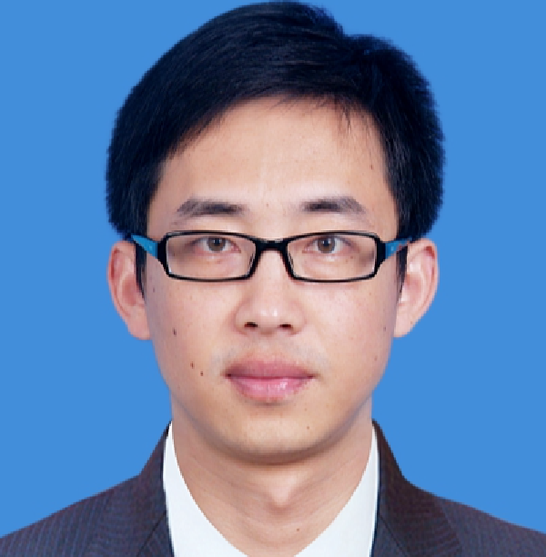
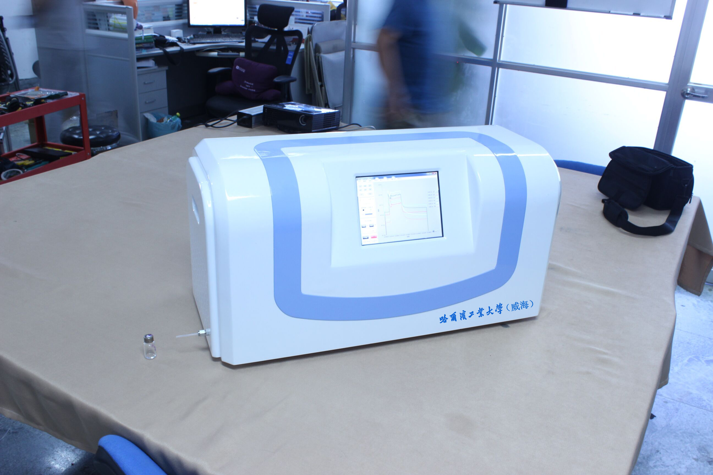
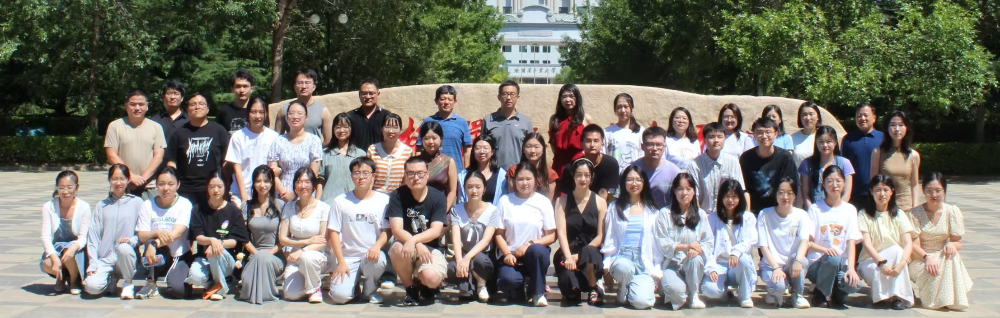

Mass spectrometry
Ionization technologies, detection methods, and real-time analysis of transient species in electrochemical reactions.
Analytical Chemistry · Scientific Instrumentation
Professor Jie Jiang develops mass spectrometry and spectroscopy technologies for marine environments, life science, food safety, and clinical diagnostics.

Professor Jiang leads an interdisciplinary program that connects fundamental analytical chemistry with deployable instruments for environmental and biomedical measurement.
Research
The lab works across the full analytical chain: understanding ionization and interfacial chemistry, engineering compact instruments, and deploying them where measurements matter.
Ionization technologies, detection methods, and real-time analysis of transient species in electrochemical reactions.
Interfacial reaction mechanisms studied through droplet-spray mass spectrometry and electrochemistry–MS coupling.
Detection of micro- and nanoplastics, marine ecological safety instrumentation, and field-ready monitoring systems.
Analytical technologies for clinical diagnostics, life science, food safety, and other high-impact applications.

INSTRUMENT / 01Built in the lab
Alongside high-resolution Orbitrap, ion-trap, and time-of-flight platforms, the team develops its own portable mass spectrometers, atomic-emission spectrometers, and handheld Raman systems.
Selected publications
Selected from more than 100 publications in analytical chemistry, interfacial science, environmental analysis, and instrumentation.
Academic path
Associate Professor · Professor · Doctoral Supervisor · Vice Dean · Dean
Visiting Scholar
Postdoctoral Researcher
BSc · PhD
Selected projects
The group leads and contributes to major programs in scientific instrumentation, marine monitoring, and environmental analysis.
National Key R&D Program of China · Chief Scientist
Shandong Major Science and Technology Innovation Project
National Natural Science Foundation of China

THE JIANG LAB · 2024People & opportunities
Faculty, research engineers, postdoctoral researchers, and graduate students work together across chemistry, environmental science, biology, and oceanography.